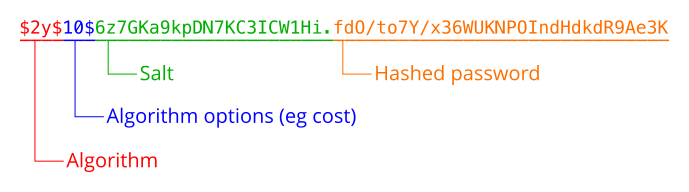

本部分解释使用散列函数对密码进行安全处理背后的原因，以及如何有效的进行密码散列处理。
为什么需要把用户的密码进行散列化？
设计任何接受用户密码的应用或服务时，密码散列是必须考虑到的最基本的安全问题之一。如果没有散列处理，泄露了存储的数据，任何存储的密码都将被窃取。如果用户使用不唯一的密码，那么不仅会危害应用或服务，还会危害其他服务上的用户账户。
对用户密码应用散列算法，然后再存储，这样任何攻击者几乎不可能确定原始密码，同时仍然能够在未来将生成的散列值与原始密码进行比较。
但值得注意的是，密码散列只能保护其在数据存储中不被泄露，但并不一定能保护它们不被注入到应用程序或服务的恶意代码截获。
MD5，SHA1 以及 SHA256 这样的散列算法是面向快速、高效进行散列处理而设计的。随着技术进步和计算机硬件的提升，破解者可以使用暴力
方式来寻找散列码所对应的原始数据。
因为现代化计算机可以快速的反转
上述散列算法的散列值，所以很多安全专家都强烈建议不要在密码散列中使用这些散列算法。
如果不建议使用常用散列函数保护密码，那么如何对密码进行散列处理？
当进行密码散列处理的时候，有两个必须考虑的因素：计算量以及“盐”。散列算法的计算量越大，暴力破解所需的时间就越长。
PHP 提供了原生密码散列 API，它提供一种安全的方式来完成密码散列和验证。
散列密码时，建议采用 Blowfish 算法，这是密码散列 API 的默认算法。相比 MD5 或者 SHA1，具有更高的计算成本，同时还有具有良好的可扩展性。
crypt() 函数也可用于密码散列处理，但仅推荐用于与其他系统的彼此协作。相反，强烈建议尽可能使用原生密码散列处理 API。
“盐”是什么？
加解密领域中的“盐”是指在进行散列处理的过程中加入的一些数据，用来避免从已计算的散列值表（被称作“彩虹表”）中对比输出数据从而获取明文密码的风险。
简单而言，“盐”就是为了提高散列值被破解的难度而加入的少量数据。现在有很多在线服务都能够提供计算后的散列值以及其对应的原始输入的清单，并且数据量极其庞大。通过加“盐”就可以避免直接从清单中查找到对应明文的风险。
如果不提供“盐”，password_hash() 函数会随机生成“盐”。非常简单，行之有效。
如何保存“盐”？
当使用 password_hash() 或者 crypt() 函数时，“盐”会被作为生成的散列值的一部分返回。可以直接把完整的返回值存储到数据库中，因为这个返回值中已经包含了足够的信息，可以直接用在 password_verify() 函数来进行密码验证。
应始终使用 password_verify()，而不是重新散列并将结果与存储的散列进行比较，以避免时序攻击。
下图展示了 crypt() 或 password_hash() 函数返回值的结构。可以看出，他们包含未来密码验证所需的算法和盐的所有信息
